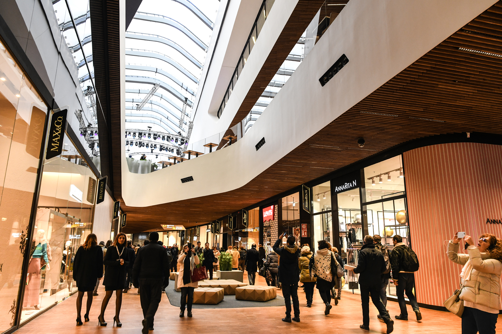
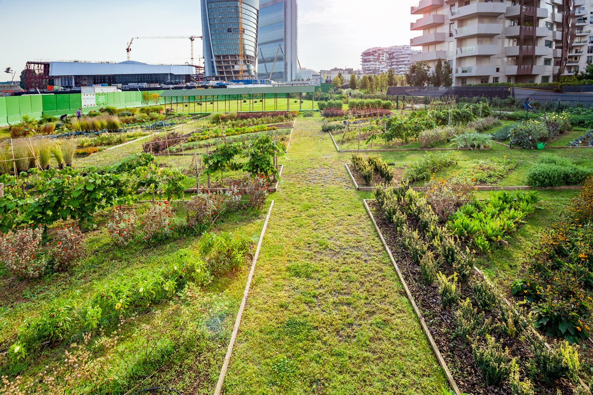
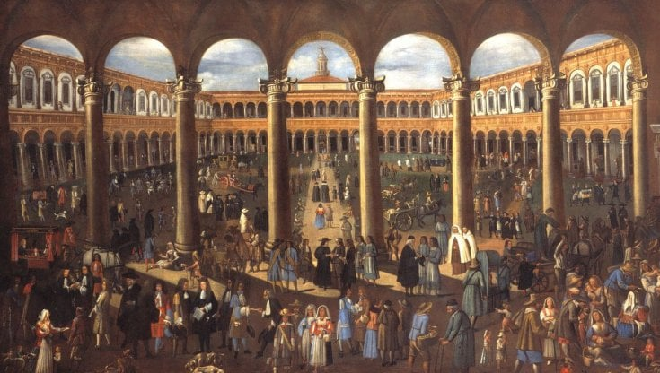

Milan is also a great place to meet friends. We recommend you to go:
Isola is the Milan of Manhattan: modern skyscrapers, beautiful large parks and a good pedestrian area with fountains and many shops.
Leaving the lilac metro it is possible to stop to read or do homework, but also to rest in a small free library. Many students stop there in the afternoon. You can also charge your phone.
There are also many playgrounds, and even an outdoor gym for exercise!
One of the parks where many people go is: Parco Biblioteca degli alberi.
This public park is located at Piazza Gae Aulenti and it was built in 2018 by the designers of Studio Inside-Outside, specialized in landscaping.
After Parco Sempione and Giardini pubblici Indro Montanelli, Parco Biblioteca degli alberi is the third largest park in Milan and, as its name suggests, it is a true botanical archive, rich in different types of plants that give their best during the summer.
Among the buildings of the Isola district, inside a courtyard of an old palace, there is a plaque in memory of the tomb of Giuseppe Parini , one of the greatest representatives of literature of Milan. Before he died the writer asked to be buried in the simplest way possible and so he was buried in what was the Cemetery of Mojazza, the ancient cemetery of Isola that owes its name to the perennially muddy soil. The building is located in Piazzale Lagosta, at number 1.
In Piazza Gae Aulenti you can stop for a snack or a snack in several places. To find out which click here
Going towards Corso Como you will find many restaurants, and one recommended is Rocking House, because they make good pizzas.
To reach Isola district by public transport you can use the underground and get off at Garibaldi FS (green or lilac line), Isola (lilac), or Zara (yellow and lilac).
Alternatively you can use the train stopping at Porta Garibaldi (lines S1, S2, S5, S6, S7, S8, S11, S13 and S14), the tram (lines 2, 7 or 33) or the bus (lines 60 and 70).
A place to go for walks with friends is Citylife/Tre torri. Here you can see:
Palaces created by well-known architects, like Zaha Hadid and Libeskind.
A mall
Artline that is the artistic walk of the neighborhood. It is a public art project: that is, the works of the artists are permanently placed in the park.
Here are many places to eat, click here to find out which, click here to find out which.
To reach City Life by public transport you can use the underground and get off at the TRE TORRI stop (lilac line) or at the AMENDOLA stop (red line). You can also reach City Life Fashion District by surface transport, such as trams and buses: Line 1, DOMODOSSOLA stop, Line 78, PORTELLO M5 stop, Line 19, PIAZZA 6 FEBBRAIO stop, Line 68, AMENDOLA stop
Thanks to these transport you can reach City Life from every area of the city.
The University of Milan, known as "Unimi" or "La Statale" is one of the most prestigious in Italy, but also a place that includes much of the artistic history of the Lombard capital. Founded in 1923, it is the largest in Lombardy and contains several curiosities that not everyone, perhaps, knows.
The University of Milan was a hospital. Today the University is located inside the Renaissance building Ca' Granda, which once housed the "Hospital of the Poor", a structure built by Francesco Sforza. Its construction began in 1456 and was completed only in the early 1800s, also thanks to the income of the Feast of Forgiveness, a Jubilee that at the time was celebrated every two years.
The University of Milan has produced important graduates, including Miuccia Prada, who here graduated in Political Science in 1971, then entering the world of fashion and becoming one of the leading companies in the world. From the State also passed the great producer Carlo Ponti, husband of Sophia Loren, who graduated in Law and then, at the beginning of the '40s, devote himself to film and bring his wife to win the Oscar for "La Ciociara".
In this area there is a place called"Colibrì",, and it is very popular from the students of the University. Inside there is also a small library and if you buy a book they offer you a cocktail. There are many other places to stop and eat click hereto find out which.
To reach the oldest hospital in Milan you can use the subway and get off at Crocetta or Missori stop (yellow line) or at S. Babila or Duomo stop (red line). You can also get there by bus at the Policlinico stop with line 54 or 77.
In Milan, in addition to the Parco Biblioteca degli Alberi, there are many other parks where you can picnic, walk, and play sports.
Park of reference for the inhabitants of the center of Milan. Inaugurated in 1893 on the ashes of the ancient Visconti ducal park "Barcho", it includes structures like:
It also has four fenced areas for dogs, a basketball court, life paths, several kilometers of dirt where you can run and walk and numerous green areas where you can sunbathe in absolute tranquility and maybe have a nice picnic with friends.
Parco Sempione is located in the centre of Milan, between the Sforzesco Castle and the Arco della Pace. The nearest metro stops are "Lanza" (Green Line M2), "Cairoli Castello" (Red Line M1) and "Cadorna FN" (Red Line M1 and Green Line M2).
Park not fenced and therefore always accessible. The Cave Park is another green area of absolute importance for the city of Milan thanks to its 135 hectares of land.
Here you can fish at the pond where you will also find a small beach to play with the sand.
The park also has many paths, life paths, a football field, basketball courts (side Armed Forces, near the barracks of the Carabinieri), an area dedicated to the game of bowls, cycling, a dog area, equestrian trails and a rich flora and fauna
The nearest metro stops are San Siro Stadio (lilac line), which is about three kilometers away, accessible in thirty-five minutes on foot; and Bisceglie (red line), which is just over two kilometers on foot, passable in half an hour. For more information visit click the link www.parcodellecave.it
The Monte Stella Park, known by the Milanese as "La Montagnetta di San Siro", was inaugurated in the fifties following the realization of the project designed by the architect Piero Bottoni, who thought of the name Stella in honor of his wife Elsa Stella.
The park has a playground, various walking and cycling paths and a wonderful view from the top of the hill.
On clear days you could see the entire Alps, the Emilian Apennines and the spires of the Duomo.
By Bus, from Milan, you can take the numbers 40, 68, 69 that make stops at the Montagnetta. By metro we recommend getting off at QT8 and Lampugnano (red line).